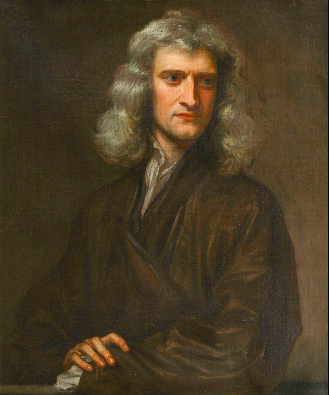

| Born | 4 January 1643 Woolsthorpe-by-Colsterworth, Lincolnshire, England |
|---|---|
| Died | 31 March 1727 (aged 84) Kensington, Middlesex, England |
| Resting place | Westminster Abbey |
| Fields | Physics,natural philosophy,alchemy,theology,mathematics,astronomy,economics |
| Signature |
Isaac Newton (1642-1727) was an English mathematician and physicist widely regarded as the single most important figure in the Scientific Revolution for his three laws of motion and universal law of gravity. Newton's laws became a fundamental foundation of physics, while his discovery that white light is made up of a rainbow of colours revolutionised the field of optics.
Early Life
Isaac Newton was born on 25 December 1642. His family in Woolsthorpe, Lincolnshire, was of the yeomanry class, but it was clear that Isaac was destined for a career other than farming. Isaac's father died a few months before he was born, and his stepfather, a minister, died when he was 14. His mother was Hannah Ayscough, and her second husband insisted that Isaac be separated from his mother for a number of years. Some historians have read into this period of neglect the cause of Newton's notoriously prickly character and hypersensitivity to criticism later in life.
The young Isaac had a prodigious interest in all things mechanical, and he made several working models of his own, but he did not do particularly well at school. He was mischievous and once sent out into the night sky a series of candle-lit lanterns, which startled the local villagers into thinking a shower of comets was about to strike them down. An uncle of Isaac was adamant he was sent to study law at Trinity College, Cambridge, in June 1661. It was not law, though, but mathematics at which the young scholar excelled.
Isaac supplemented his orthodox education by taking private lessons with the mathematician and theologian Isaac Barrow (1630-1677). Barrow would later recommend Newton for his own soon-to-be-vacant chair at Trinity College. Newton graduated in April 1665, but any hope of a quick career launch was scuppered when there was an outbreak of the Black Death plague. Isaac was obliged to return to the family home in Woolthorpe for a year or more.